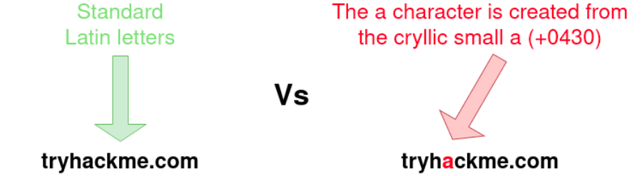

Phishing
Tool/Framework used: https://getgophish.com/
https://tryhackme.com/room/phishingyl : Task-5
Droppers
Droppers are software that phishing victims tend to be tricked into downloading and running on their system. The dropper may advertise itself as something useful or legitimate such as a codec to view a certain video or software to open a specific file.
The droppers are not usually malicious themselves, so they tend to pass antivirus checks. Once installed, the intended malware is either unpacked or downloaded from a server and installed onto the victim's computer. The malicious software usually connects back to the attacker's infrastructure. The attacker can take control of the victim's computer, which can further explore and exploit the local network.
Choosing a Phishing Domain
Choosing the right Phishing domain to launch your attack from is essential to ensure you have the psychological edge over your target. A red team engagement can use some of the below methods for choosing the perfect domain name.
Expired Domains:
Although not essential, buying a domain name with some history may lead to better scoring of your domain when it comes to spam filters. Spam filters have a tendency to not trust brand new domain names compared to ones with some history.
Typosquatting:
Typosquatting is when a registered domain looks very similar to the target domain you're trying to impersonate. Here are some of the common methods:
Misspelling: goggle.com Vs google.com
Additional Period: go.ogle.com Vs google.com
Switching numbers for letters: g00gle.com Vs google.com
Phrasing: googles.com Vs google.com
Additional Word: googleresults.com Vs google.com
These changes might look unrealistic, but at a glance, the human brain tends to fill in the blanks and see what it wants to see, i.e. the correct domain name.
TLD Alternatives:
A TLD (Top Level Domain) is the .com .net .co.uk .org .gov e.t.c part of a domain name, there are 100's of variants of TLD's now. A common trick for choosing a domain would be to use the same name but with a different TLD. For example, register tryhackme.co.uk to impersonate tryhackme.com.
IDN Homograph Attack/Script Spoofing:
Originally domain names were made up of Latin characters a-z and 0-9, but in 1998, IDN (internationalized domain name) was implemented to support language-specific script or alphabet from other languages such as Arabic, Chinese, Cyrillic, Hebrew and more. An issue that arises from the IDN implementation is that different letters from different languages can actually appear identical. For example, Unicode character U+0430 (Cyrillic small letter a) looks identical to Unicode character U+0061 (Latin small letter a) used in English, enabling attackers to register a domain name that looks almost identical to another.
